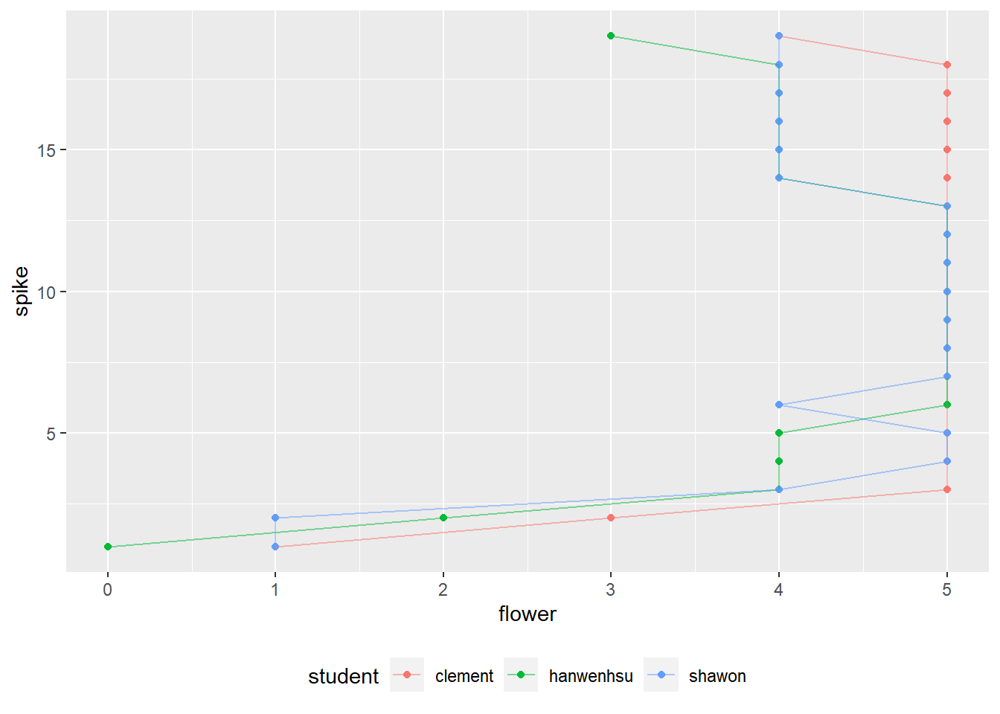

path <- "./data/student/"
filenames <- list.files(path,pattern=".xlsx")
#create empty list
df <- vector(mode="list",length=length(filenames))
for(i in 1:length(filenames)){
fullpath <- paste0(path,filenames[i])
df[[i]] <- xlsx::read.xlsx(fullpath,
sheetIndex = 1) %>%
names()
}
df Week8: Grain development Iv
R-intermediate
Welcome to the eighth course! You will learn more about for-loop and data visualization:
Learning goals
- requirements of merging dataframes
- save or show the result of for loop
ggplot()
Discussion
- What is the component for-loop? How to check if it works for each element?
- what are
longandwide? when to use what?
1 Student’s data
practice with files from data/student.
1.1 How to save the column names of all files in a directory to a list using for loop?
For loop concept

1.2 How to name list elements based on student’s name ?
$clement
[1] "Var" "Plot_Id" "Spikes" "flower" "kernal.full"
[6] "Kernal.half" "kernal.small"
$hanwenhsu
[1] "var" "plot_id" "spike" "flower" "kernel.full"
[6] "kernel.half" "kernel.small"
$shawon
[1] "var" "plot.id" "spike" "flower" "kernel.full"
[6] "kernel.half" "NA."
click for answer
student_name <- purrr::map_chr(filenames, ~{
.x %>% strsplit("_") %>% unlist() %>%
.[4] %>% sub(".xlsx","",.)
})
names(df) <-student_name
df1.3 How to combine all the dataframe by row?
If you know the column names are different, can you still combine them?
df<- map_dfr(list.files("../data/student"),~{
file<- xlsx::read.xlsx(paste0("../data/student/",.x),sheetIndex = 1)
})
df %>%
glimpse()Rows: 57
Columns: 15
$ Var <chr> "Capone", NA, NA, NA, NA, NA, NA, NA, NA, NA, NA, NA, NA,~
$ Plot_Id <dbl> 159, NA, NA, NA, NA, NA, NA, NA, NA, NA, NA, NA, NA, NA, ~
$ Spikes <dbl> 1, 2, 3, 4, 5, 6, 7, 8, 9, 10, 11, 12, 13, 14, 15, 16, 17~
$ flower <dbl> 1, 3, 5, 5, 5, 5, 5, 5, 5, 5, 5, 5, 5, 5, 5, 5, 5, 5, 4, ~
$ kernal.full <dbl> 0, 2, 2, 2, 3, 2, 2, 1, 2, 2, 2, 2, 2, 2, 2, 2, 3, 2, 1, ~
$ Kernal.half <dbl> 0, 0, 0, 0, 0, 0, 0, 0, 0, 0, 0, 0, 0, 0, 0, 0, 0, 0, 0, ~
$ kernal.small <dbl> 0, 0, 0, 0, 0, 0, 0, 0, 0, 0, 0, 0, 0, 0, 0, 0, 0, 0, 0, ~
$ var <chr> NA, NA, NA, NA, NA, NA, NA, NA, NA, NA, NA, NA, NA, NA, N~
$ plot_id <dbl> NA, NA, NA, NA, NA, NA, NA, NA, NA, NA, NA, NA, NA, NA, N~
$ spike <dbl> NA, NA, NA, NA, NA, NA, NA, NA, NA, NA, NA, NA, NA, NA, N~
$ kernel.full <dbl> NA, NA, NA, NA, NA, NA, NA, NA, NA, NA, NA, NA, NA, NA, N~
$ kernel.half <dbl> NA, NA, NA, NA, NA, NA, NA, NA, NA, NA, NA, NA, NA, NA, N~
$ kernel.small <dbl> NA, NA, NA, NA, NA, NA, NA, NA, NA, NA, NA, NA, NA, NA, N~
$ plot.id <dbl> NA, NA, NA, NA, NA, NA, NA, NA, NA, NA, NA, NA, NA, NA, N~
$ NA. <lgl> NA, NA, NA, NA, NA, NA, NA, NA, NA, NA, NA, NA, NA, NA, N~Here are possible steps:
- observe the patterns of column names, how to unify the column names?
- replace “kernal” with “kernel”
- replace “spikes” with “spike”
- replace “plot.id” with “plot_id”
- how to add the student’s name as a column? where should you put it in the for-loop body?
- how to fill the missing cultivar and plot_id?
- remove “na.” column check your loop-body with the first element in your range.
click for answer
library(magrittr)
df<- map_dfr(list.files("../data/student"),~{
student_name <- .x %>% strsplit("_") %>% unlist() %>%
.[4] %>% sub(".xlsx","",.)
file<- xlsx::read.xlsx(paste0("../data/student/",.x),sheetIndex = 1) %>%
`colnames<-`(stringr::str_to_lower(names(.)))%>%
`colnames<-`(gsub("kernal","kernel",names(.))) %>%
`colnames<-`(gsub("spikes","spike",names(.)))%>%
`colnames<-`(gsub("plot.id","plot_id",names(.))) %>%
mutate(student=student_name)
})
df %<>% mutate(var="Capone",plot_id=159) %>%
.[!grepl("na.",names(.))]
df %>% glimpse()Rows: 57
Columns: 8
$ var <chr> "Capone", "Capone", "Capone", "Capone", "Capone", "Capone~
$ plot_id <dbl> 159, 159, 159, 159, 159, 159, 159, 159, 159, 159, 159, 15~
$ spike <dbl> 1, 2, 3, 4, 5, 6, 7, 8, 9, 10, 11, 12, 13, 14, 15, 16, 17~
$ flower <dbl> 1, 3, 5, 5, 5, 5, 5, 5, 5, 5, 5, 5, 5, 5, 5, 5, 5, 5, 4, ~
$ kernel.full <dbl> 0, 2, 2, 2, 3, 2, 2, 1, 2, 2, 2, 2, 2, 2, 2, 2, 3, 2, 1, ~
$ kernel.half <dbl> 0, 0, 0, 0, 0, 0, 0, 0, 0, 0, 0, 0, 0, 0, 0, 0, 0, 0, 0, ~
$ kernel.small <dbl> 0, 0, 0, 0, 0, 0, 0, 0, 0, 0, 0, 0, 0, 0, 0, 0, 0, 0, 0, ~
$ student <chr> "clement", "clement", "clement", "clement", "clement", "c~This answer is written in map_() series, could you rewrite in for loop?
1.4 How to visualize the result?
Practice to make a draft, what will be the x and y, what will be the color?
Is there difference between geom_line() and geom_path()?

click for answer
# line plot 1
df %>%
group_by(student,spike) %>%
ggplot(aes(flower,spike,color=student))+
geom_line(alpha=.5)+
theme(legend.position = "bottom")
# line plot 2
df %>%
group_by(student,spike) %>%
ggplot(aes(flower,spike,color=student))+
geom_point()+
geom_path(alpha=.5)+
theme(legend.position = "bottom")